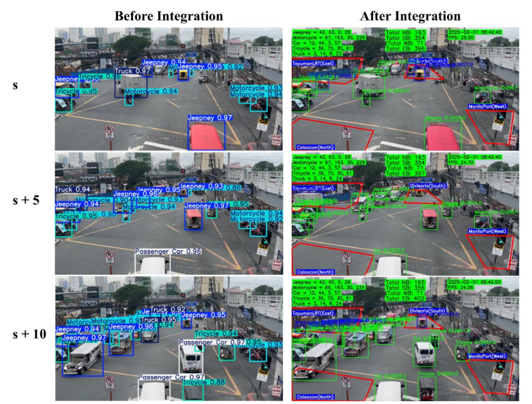

Edge-Based Traffic Monitoring System Using Computer Vision

-
Developed an end-to-end computer vision pipeline in Python, integrating
YOLOv11, BoT SORT, and directional counting across
12 movement patterns for road intersections, achieving an mAP-50 of 0.931
and F1-score of 0.893 on a custom dataset.
-
Collected and annotated traffic footage from Manila, performing data augmentation to
enhance detection robustness across five localized vehicle classes
(Jeepney, Motorcycle, Passenger Car, Tricycle, Truck).
-
Built a graphical user interface (GUI) using Tkinter and deployed the optimized
model on an NVIDIA Jetson Orin Nano, enabling real-time, scalable traffic monitoring
to support flow analysis and urban transport planning.
Back to Projects